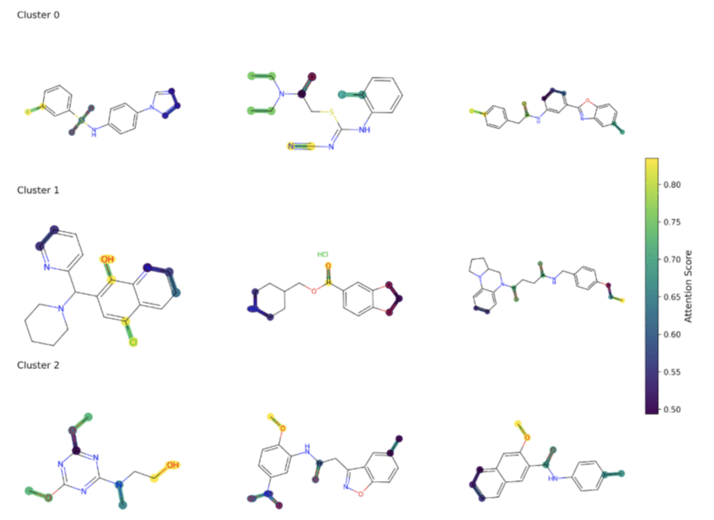

|
Gerard Ompad I work as a full time data scientist at DTN which is based in Minneapolis, USA, researching on innovative products for energy, and environmental monitoring, specifically for wildfire. I'm also a lecturer for (computational) statistics and probability theory at the University of the Philippines-Cebu, Department of Statistics. However, my personal research interests revolve around the intersection of computational statistics, artificial intelligence, tropical medicine, and chemical engineering. I am an active guest researcher at the University of Copenhagen Drug Safety Group headed by Maurizio Sessa. For my civic engagement, I also conduct researches for Data and Implementation Sciences for Health, a Non-Goverment Organization focused on the application of technology, artificial intelligence, and data science for population health. I am currently finishing my second Master's degree thesis on (Computational) Statistics at the University of the Philippines. My current thesis topic is on uncertainty quantification and empirical likelihood estimation for generative artificial intelligence. I also have a degree in Tropical Medicine from University of the East Ramon Magsaysay Medical Center, and an undergraduate degree in Chemical Engineering from the University of San Carlos. |
{kind=link}
ResearchI'm interested in conducting both applied and theoretical research on the intersection of computational statistics, deep learning, and generative AI. At DTN , I am currently involved in modeling wildfire and storm risks. I am also currently working with Maurizio Sessa of the University of Copenhagen Drug Safety Group, developing generative A.I. for pharmacovigilance and pharmacoepidemiology. I am also working with Andrea Rossi from the University of Milan on the topics of inappropriate prescriptions for geriatric patients, and with Dr. Jason V. Alacapa of the Data and Implementation Sciences for Health for TB (tuberculosis) analytics. |
|
|
Current Use of Common Data Models in the Nordic Countries
Gerard Ompad, Carolyn E. Cesta, Jacqueline M. Cohen, Maarit K. Leinonen, Heidi Taipale, Huiqi Li, Lárus S. Guðmundsson, Mika Gissler, Maurizio Sessa Pharmacoepidemiology & Drug Safety, 2025 Common data models (CDMs) standardize healthcare data to facilitate reproducible and consistent analyses, supporting decision-making in medicine and vaccine safety and pharmacoepidemiology. Despite their global recognition, the implementation and use of CDMs in the Nordic countries remain underexplored, particularly in the context of cross-national collaborations. |
|
|
Off-the-Shelf Large Language Models for Guiding Pharmacoepidemiological Study Design
Gerard Ompad, Keele Wurst, Darmendra Ramcharran, Anders Hviid, Andrew Bate, Maurizio Sessa Clinical Pharmacology & Therapeutics, 2025 Assessed the ability of two off-the-shelf large language models, ChatGPT and Gemini, to support the design of pharmacoepidemiological studies. While ChatGPT and Gemini show promise in certain tasks supporting pharmacoepidemiological study design, their limitations in relevance and coding accuracy highlight the need for critical oversight by domain experts. |
|

|
Utilizing Deep Learning to Predict the Potency of Beta-Lactamase Inhibitors
Jericho Pasco, Sheena Stella Salde, Gerard Ompad, Christine Bandalan 13th International Conference on Bioinformatics and Computational Biology (ICBCB), 2025 Drug-resistant bacteria pose a significant global health threat, driving the need for innovative antibiotic development. The efficacy of these antibiotics is evaluated through biological potency assays that measure their ability to elicit targeted responses. Beta-lactam bacteria produce beta-lactamases, enzymes that hydrolyze the beta-lactam ring, rendering the antibiotics ineffective. To counteract this mechanism, beta-lactamase inhibitors play a pivotal role by preventing the enzymatic degradation of beta-lactam antibiotics. This study focuses on predicting the chemical compositions and molecular motifs that characterize active beta-lactamase inhibitors. Using k-means clustering, active small-molecule beta-lactamase inhibitors were categorized based on their unique molecular structures. A graph-based modeling approach was employed to represent these molecular structures, then leveraging Graph Attention Networks (GAT) to identify and predict substructural features associated with each distinct cluster. Molecular graph representations served as inputs for the GAT model, enabling precise classification of compounds into distinct clusters. The GAT model's performance in multiclass classification was benchmarked against traditional approaches, demonstrating superior accuracy in identifying key substructures that differentiate active beta-lactamase inhibitors. Additionally, the attention mechanism within the GAT model facilitated the identification of specific molecular motifs by focusing on relevant structural features during the learning process. The findings highlight the effectiveness of the graph-based approach in advancing the understanding and prediction of active betalactamase inhibitors, with implications for drug discovery and combating antibiotic resistance. |

|
Deep Learning Methods to Predict Sea Surface Temperature and Marine Heatwave Occurrence in the Philippine Sea
Isabel Joy Adriatico, Shaun Tristan Elizer Cuesta, Gerard Ompad Software Engineering: Emerging Trends and Practices in System Development. CSOC 2025. Lecture Notes in Networks and Systems, vol 1560. Springer, 2025 Marine heatwaves (MHWs), which are characterized by prolonged periods of anomalously high sea surface temperatures (SST), pose significant threats to marine ecosystems, coastal economies, and global biodiversity. The Philippines—situated in the Coral Triangle—relies heavily on its marine resources, making it vulnerable to these impacts. This study explores the use of deep learning models to predict SST and identify the occurrence of MHWs in the Philippine Sea using data sourced from NOAA Daily OISST. The study evaluated four deep learning architectures: (1) Long Short-Term Memory (LSTM), (2) Convolutional Neural Networks (CNN), (3) a hybrid model combining the strengths of both LSTM and CNN, and (4) Neural Basis Expansion Analysis for Interpretable Time Series (N-BEATS). To optimize performance, all models were fine-tuned using Bayesian optimization (BO). The hybrid model demonstrated a superior performance in SST forecasting, achieving RMSEs of 0.1034 °C at 1-day and 0.0652 °C at 14-day lead times. For MHW detection, N-BEATS achieved an RMSE of 0.0523 °C, with a recall of 98.25%, ensuring reliable identification of rare events. N-BEATS also obtained an F1-score of 97.67%, reflecting a strong balance between precision and recall, minimizing both false positives and false negatives. These results highlight the potential of neural networks in providing accurate SST forecasting and MHW detection to mitigate climate change impacts on the Philippines’ marine ecosystems and coastal communities. |

|
Investigating Causal Relationships Between Inflation News Among Other News Topics In Philippine News Media Using Granger Causality
Erwin Antepuesto, Stan Kiefer Gallego, Gerard Ompad, Angie Ceniza 2024 IEEE International Conference on Communication, Networks and Satellite (COMNETSAT), 2024 Beyond economic concerns, inflation has also influenced the media narratives of other topics. This study aims to explore how inflation news impacts various aspects of Philippine society by investigating the relationships of inflation-related news articles and other news topics using Granger Causality. |
|
|
Multi-Network Based Approach for Drug Repurposing
Ronan Jasper G. Reponte, Joshua Rodriguez, Gerard Ompad, Angie Ceniza 2024 IEEE International Conference on Communication, Networks and Satellite (COMNETSAT), 2024 Utilizes a novel complex multi-layered network approach for aggregating drug networks of varying information into a single unified network. Under the hypothesis that drugs that are closely related will appear as neighboring nodes, using a community detection approach allows novel discovery of new applications of old and existing drugs. This paper describes a method to aggregate multi-layered network. Drug data is collated from DrugBank and PubChem; an adjacency matrix was created, from which the Normalized Graph Laplacian is generated. Prior to network aggregation, eigenvectors, and Uniform Manifold Approximation and Projection (UMAP) methods were utilized to reduce the network dimension. Additionally, an inference was implemented to test for complete spatial randomness (CSR) to check for node scattering. |